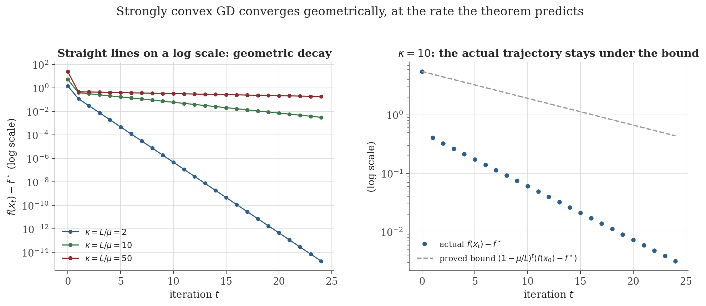
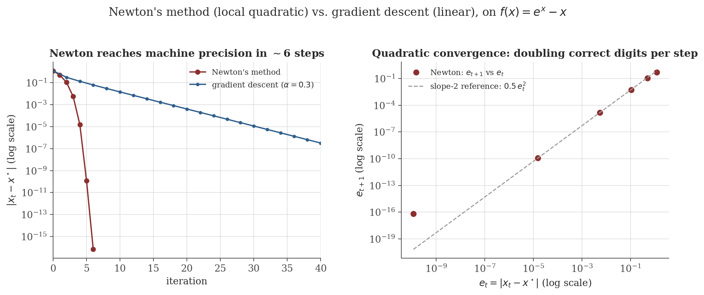

Optimization Methods
Disclaimer: These are my personal notes compiled for my own reference and learning. They may contain errors, incomplete information, or personal interpretations. While I strive for accuracy, these notes are not peer-reviewed and should not be considered authoritative sources. Please consult official textbooks, research papers, or other reliable sources for academic or professional purposes.
Contents
- The optimization problem, and why convexity matters
- Convex sets and functions: the first-order characterization
- $L$-smoothness and the descent lemma
- Gradient descent: $O(1/T)$ convergence
- Strong convexity and linear convergence
- Newton's method and local quadratic convergence
- Stochastic gradient descent
- Momentum and adaptive methods, more briefly
- Constrained optimization: Lagrangian duality and KKT
- Non-convex optimization and saddle points
- Computation
- Common pitfalls
- Connections
- References
1. The optimization problem, and why convexity matters
Machine learning training is, almost without exception, the problem $\min_\theta L(\theta)$ for a loss $L(\theta)=\frac1m\sum_{i=1}^m\ell(f(x_i;\theta),y_i)$. Fermat's theorem (differentiation note, Section 6, and its multivariable generalization in the multivariable calculus note, Section 7) says a differentiable minimizer must be a critical point, $\nabla L(\theta^*)=0$ — necessary, never sufficient. For a general (non-convex) $L$, that is close to all that can be said in general: finding a global minimizer of an arbitrary smooth function is NP-hard, and gradient information alone cannot distinguish a global minimum from a local one, let alone a saddle.
Convexity is the property that closes this gap. Sections 2–7 build, with full proofs, the classical theory of first- and second-order methods on convex objectives: every critical point is a global minimizer, and — with a quantitative smoothness assumption — the rate at which gradient-based methods approach it can be bounded exactly, not just asserted to converge "eventually." Most deep learning objectives are not convex, but the convex theory is not merely a warm-up: it is the exact theory used in enormous swaths of applied optimization (linear/logistic regression, SVMs, LASSO, many control and finance problems), and its proof techniques — the descent lemma, in particular — are reused essentially unchanged in the local, near-a-minimum analysis of non-convex training dynamics.
2. Convex sets and functions: the first-order characterization
$C\subseteq\mathbb R^n$ is convex if $x,y\in C,\,t\in[0,1]\Rightarrow tx+(1-t)y\in C$. $f:C\to\mathbb R$ is convex if $f(tx+(1-t)y)\leq tf(x)+(1-t)f(y)$ for all $x,y\in C$, $t\in[0,1]$.
For $f$ differentiable on a convex open set $C$: $f$ is convex iff $f(y)\geq f(x)+\nabla f(x)\cdot(y-x)$ for all $x,y\in C$ — the tangent plane at any point lies entirely below the graph.
An immediate corollary: if $\nabla f(\theta^*)=0$ for convex $f$, the first-order inequality at $x=\theta^*$ reads $f(y)\geq f(\theta^*)$ for every $y$ — a critical point of a convex function is automatically a global minimizer. This is the entire reason convexity matters: Fermat's necessary condition (Section 1) becomes sufficient.
3. $L$-smoothness and the descent lemma
$f$ is $L$-smooth if $\nabla f$ is $L$-Lipschitz: $\|\nabla f(x)-\nabla f(y)\|\leq L\|x-y\|$ for all $x,y$.
If $f$ is $L$-smooth, then $f(y)\leq f(x)+\nabla f(x)\cdot(y-x)+\dfrac L2\|y-x\|^2$ for all $x,y$ — a quantitative converse to Section 2's inequality, with a matching quadratic upper bound.
This lemma is the single most-used tool in first-order optimization theory: it turns "the gradient doesn't change too fast" into an explicit, quantitative bound on how much a gradient step can overshoot — exactly what the convergence proofs in Sections 4 and 5 need.
4. Gradient descent: $O(1/T)$ convergence
If $f$ is $L$-smooth and $x_{t+1}=x_t-\frac1L\nabla f(x_t)$, then $f(x_{t+1})\leq f(x_t)-\dfrac1{2L}\|\nabla f(x_t)\|^2$.
If $f$ is convex, $L$-smooth, and has a minimizer $x^*$ with $f^*=f(x^*)$, gradient descent $x_{t+1}=x_t-\frac1L\nabla f(x_t)$ satisfies $f(x_T)-f^*\leq\dfrac{L\|x_0-x^*\|^2}{2T}$.
The rate is $O(1/T)$: to halve the optimality gap, roughly double the number of iterations — sublinear, but a genuine, quantitative, non-asymptotic guarantee, and it holds for every convex $L$-smooth function with no further assumptions. Section 5 shows a stronger hypothesis buys a qualitatively faster rate.
5. Strong convexity and linear convergence
$f$ is $\mu$-strongly convex if $f(y)\geq f(x)+\nabla f(x)\cdot(y-x)+\dfrac\mu2\|y-x\|^2$ for all $x,y$ — Section 2's inequality strengthened with a quadratic lower bound, the mirror image of the descent lemma's quadratic upper bound.
If $f$ is $\mu$-strongly convex with minimizer $x^*$, then $\|\nabla f(x)\|^2\geq2\mu\big(f(x)-f^*\big)$ for every $x$.
If $f$ is $\mu$-strongly convex and $L$-smooth, gradient descent with $x_{t+1}=x_t-\frac1L\nabla f(x_t)$ satisfies $f(x_T)-f^*\leq\left(1-\dfrac\mu L\right)^T\big(f(x_0)-f^*\big)$.
The ratio $\kappa=L/\mu\geq1$ is the condition number: the rate $1-\mu/L=1-1/\kappa$ is close to $1$ (slow) when $\kappa$ is large (an elongated, ill-conditioned bowl) and close to $0$ (fast) when $\kappa\approx1$ (a well-conditioned, near-spherical bowl) — exactly the behavior Figure 1 verifies. Going from $O(1/T)$ (Section 4) to geometric decay is the single biggest lever available to first-order methods, and it costs nothing beyond assuming the extra quadratic lower bound.

6. Newton's method and local quadratic convergence
$\theta_{t+1}=\theta_t-H(\theta_t)^{-1}\nabla L(\theta_t)$, where $H=\nabla^2L$ is the Hessian — the second-order Taylor approximation (multivariable calculus note, Section 6) minimized exactly at each step, rather than descended along its gradient alone.
If $f\in C^2$ near $x^*$ with $\nabla f(x^*)=0$, $H(x^*)$ positive definite, and $H$ is $M$-Lipschitz near $x^*$, then for $x_t$ close enough to $x^*$, $\|x_{t+1}-x^*\|\leq C\|x_t-x^*\|^2$ for a constant $C$ depending on $M$ and $H(x^*)^{-1}$.
Quadratic convergence roughly doubles the number of correct digits every iteration, dramatically faster than gradient descent's linear rate (Figure 2) — but the theorem is local: it says nothing about $x_0$ far from $x^*$, where Newton steps can badly overshoot (Section 12 has a concrete divergence example) and $H(\theta_t)$ may not even be positive definite. Forming and inverting $H\in\mathbb R^{n\times n}$ costs $O(n^3)$, prohibitive for the $n$ in the millions or billions typical of deep networks — the practical reason first-order methods, not Newton's method, dominate deep learning despite the worse asymptotic rate.

7. Stochastic gradient descent
When $L(\theta)=\frac1m\sum_i\ell_i(\theta)$ and $m$ is large, computing $\nabla L$ exactly at every step is expensive; SGD instead uses a cheap unbiased estimate $g_t$ (e.g. the gradient of a single random $\ell_i$, or a mini-batch average).
Let $f$ be convex, and suppose $\mathbb E[g_t\mid x_t]=\nabla f(x_t)$ (unbiased) and $\mathbb E[\|g_t\|^2\mid x_t]\leq G^2$ (bounded second moment). With constant step size $\alpha$ and $\bar x_T=\frac1T\sum_{t=0}^{T-1}x_t$: $\mathbb E[f(\bar x_T)]-f^*\leq\dfrac{\|x_0-x^*\|^2}{2\alpha T}+\dfrac{\alpha G^2}2$.
Optimizing $\alpha\propto1/\sqrt T$ balances the two terms and gives rate $O(1/\sqrt T)$ — slower than full-batch GD's $O(1/T)$ (Section 4), the price paid for using a noisy gradient estimate instead of the exact one. The bound does not require the objective to be smooth (only convex), unlike every result in Sections 4–6; this is one reason SGD-family methods remain the default even where full gradients would be affordable.
8. Momentum and adaptive methods, more briefly
The methods below are standard and heavily used in practice, but their sharpest convergence results (Nesterov's $O(1/T^2)$ acceleration, adaptive-method regret bounds) require substantially more technical machinery than this note's scope; formulas and the qualitative mechanism are recorded here, without full proof.
Classical: $v_{t+1}=\beta v_t+\alpha\nabla L(\theta_t)$, $\theta_{t+1}=\theta_t-v_{t+1}$ ($\beta\approx0.9$), accumulating a velocity that damps oscillation across narrow (high-curvature) directions while still accelerating along flat ones. Nesterov's accelerated gradient evaluates the gradient at the extrapolated point $\theta_t-\beta v_t$ instead, and provably achieves the optimal $O(1/T^2)$ rate for convex $L$-smooth objectives (Nesterov, 1983) — quadratically faster than Section 4's $O(1/T)$, and provably the best possible for any method using only gradient evaluations at points determined by past gradients.
AdaGrad: $G_t=G_{t-1}+\nabla L(\theta_t)^{\odot2}$, $\theta_{t+1}=\theta_t-\frac\alpha{\sqrt{G_t+\epsilon}}\odot\nabla L(\theta_t)$ — a per-coordinate learning rate that shrinks for frequently-updated coordinates. RMSprop replaces the ever-growing sum $G_t$ with an exponential moving average, preventing the learning rate from decaying to $0$. Adam combines an exponential moving average of the gradient itself (momentum) with one of its squared magnitude (RMSprop-style scaling), plus a bias correction for the first few steps: $m_t=\beta_1m_{t-1}+(1-\beta_1)\nabla L(\theta_t)$, $v_t=\beta_2v_{t-1}+(1-\beta_2)\nabla L(\theta_t)^{\odot2}$, $\theta_{t+1}=\theta_t-\alpha\,\hat m_t/(\sqrt{\hat v_t}+\epsilon)$ with $\hat m_t,\hat v_t$ the bias-corrected moments.
9. Constrained optimization: Lagrangian duality and KKT
The multivariable calculus note (Section 9) proves, for a single equality constraint in two variables, that $\nabla f(a,b)=\lambda\nabla g(a,b)$ at a constrained extremum. The identical proof — reduce to the constraint set via the Implicit Function Theorem, apply Fermat's theorem along it, and match gradients via the chain rule — generalizes verbatim to $n$ variables and multiple constraints, giving the general Lagrangian $\mathcal L(x,\lambda,\mu)=f(x)+\sum_i\lambda_ig_i(x)+\sum_j\mu_jh_j(x)$ for inequality constraints $g_i(x)\leq0$ and equality constraints $h_j(x)=0$.
Under a regularity condition on the constraints (e.g. Slater's condition), $x^*$ is optimal iff there exist $\lambda^*\geq0,\mu^*$ with: stationarity $\nabla f(x^*)+\sum_i\lambda_i^*\nabla g_i(x^*)+\sum_j\mu_j^*\nabla h_j(x^*)=0$; primal feasibility $g_i(x^*)\leq0$, $h_j(x^*)=0$; dual feasibility $\lambda_i^*\geq0$; complementary slackness $\lambda_i^*g_i(x^*)=0$.
Complementary slackness is the qualitatively new ingredient beyond the equality-constraint case: it says each inequality constraint is either exactly active ($g_i(x^*)=0$, "binding") with a nonnegative multiplier, or strictly inactive ($g_i(x^*)<0$) with multiplier exactly $0$ — a constraint that isn't currently limiting the solution exerts no force on it, the same intuition as a physical constraint (e.g. a wall) only pushing back when actually touched. (See Boyd & Vandenberghe, 2004, Ch. 5, for the full derivation via Lagrangian duality.)
10. Non-convex optimization and saddle points
Deep learning loss landscapes are not convex, so nothing in Sections 2–7 applies rigorously; $\nabla L(\theta)=0$ only guarantees a critical point (Section 1), and the multivariable calculus note's second-derivative test (Section 7.1) is exactly the tool for telling minima, maxima, and saddles apart once such a point is found — $D<0$ there is precisely a saddle, a direction of decrease sitting right next to a direction of increase. High-dimensional loss landscapes are dominated by saddle points rather than poor local minima (empirically and under random-matrix-theoretic models of the Hessian's eigenvalue spectrum — a positive-definite Hessian at a random critical point becomes exponentially rare as dimension grows), which reframes the practical difficulty of deep learning optimization: escaping saddles efficiently, more than avoiding bad local minima. Plain gradient descent provably converges to a strict saddle only for a measure-zero set of initializations (Lee et al., 2016) but can slow to a crawl near one, since $\|\nabla L\|\to0$ there too — the practical motivation behind the momentum and noise-injection techniques of Section 8.
11. Computation
The figures above are generated by optimization/generate_figures.py. The snippet below reproduces the strongly-convex linear-convergence check (actual value against the proved geometric bound) and the Newton iterates on $f(x)=e^x-x$.
import numpy as np
def gd_on_quadratic(mu, L, x0, n_iters):
A = np.diag([mu, L])
alpha = 1.0 / L
x = np.array(x0, dtype=float)
vals = []
for _ in range(n_iters):
vals.append(0.5 * x @ A @ x)
x = x - alpha * (A @ x)
return np.array(vals)
mu, L = 1.0, 10.0
vals = gd_on_quadratic(mu, L, [1.0, 1.0], 6)
bound = (1 - mu / L) ** np.arange(6) * vals[0]
for t in range(6):
print(f"t={t} f(x_t)-f*={vals[t]:.6e} bound={bound[t]:.6e} holds={vals[t] <= bound[t]}")
f = lambda x: np.exp(x) - x
fp = lambda x: np.exp(x) - 1
fpp = lambda x: np.exp(x)
x = 1.2
print()
for t in range(6):
print(f"Newton t={t} x_t={x:.10f}")
x = x - fp(x) / fpp(x)
Actual output:
t=0 f(x_t)-f*=5.500000e+00 bound=5.500000e+00 holds=True
t=1 f(x_t)-f*=4.050000e-01 bound=4.950000e+00 holds=True
t=2 f(x_t)-f*=3.280500e-01 bound=4.455000e+00 holds=True
t=3 f(x_t)-f*=2.657205e-01 bound=4.009500e+00 holds=True
t=4 f(x_t)-f*=2.152336e-01 bound=3.608550e+00 holds=True
t=5 f(x_t)-f*=1.743392e-01 bound=3.247695e+00 holds=True
Newton t=0 x_t=1.2000000000
Newton t=1 x_t=0.5011942119
Newton t=2 x_t=0.1070009778
Newton t=3 x_t=0.0055257722
Newton t=4 x_t=0.0000152390
Newton t=5 x_t=0.0000000001The proved geometric bound holds at every single iteration (as it must), while the actual value drops noticeably faster after the first step — this particular quadratic has $x_0$ aligned so that gradient descent with $\alpha=1/L$ exactly zeros out the steepest ($L$-curvature) eigendirection in one step, leaving only the slower $\mu$-direction to govern the remaining, still-geometric decay. Newton's iterate count matches Section 6's figure: from $x_0=1.2$ it reaches $x_5\approx1.5\times10^{-10}$, doubling correct decimal digits almost exactly every step.
12. Common pitfalls
On the same $f(x)=x-\ln x$ used elsewhere, starting from $x_0=4$ (rather than closer to the minimizer $x^*=1$): the update simplifies exactly to $x_{t+1}=x_t(2-x_t)$, giving $x_1=4(2-4)=-8$ — outside the domain $x>0$ where $\ln x$ is even defined, and the method breaks down immediately. Section 6's quadratic-convergence guarantee is explicitly local; nothing in the theorem bounds behavior far from $x^*$, and in practice Newton's method is often run with a line search or trust region specifically to control this failure mode.
Section 11's numbers show the actual optimality gap dropping faster than the proved $(1-\mu/L)^t$ bound at every step. A theorem of the form "$X\leq Y$" is not falsified by observing $X\ll Y$ in a particular instance — it is falsified only by finding $X>Y$. Treating a worst-case bound as a prediction of the typical case is a common misreading of this kind of result.
Sections 1 and 10: without convexity, a critical point can be a saddle or a poor local minimum. Monitoring $\|\nabla L\|\to0$ during training confirms convergence to a critical point, not to a good one — exactly why validation loss, not training gradient norm, is the metric that actually matters for model quality.
Section 7's guarantee needs $\mathbb E[g_t\mid x_t]=\nabla f(x_t)$ exactly. Mini-batches drawn without replacement from a shuffled dataset are unbiased only if every example is equally likely to appear in a given batch and batch composition doesn't correlate with $\theta_t$; a subtly non-uniform sampler (e.g. one that oversamples recently-misclassified examples without correcting for it) breaks the hypothesis the proof relies on, and the $O(1/\sqrt T)$ guarantee no longer applies, even though the algorithm still runs and produces numbers.
13. Connections
- Differentiation. Fermat's theorem (Section 6 there) is the necessary condition every method in this note searches for; the Fundamental-Theorem-of-Calculus-based proof technique of the descent lemma (Section 3) echoes that note's own reliance on the FTC and Taylor's theorem for quantitative error control.
- Multivariable calculus. The chain rule and the "restrict to a line segment" proof technique (that note's Section 6) are used repeatedly here (Sections 2, 3, 6); Section 9's Lagrange multiplier theorem generalizes directly to this note's KKT conditions (Section 9), and the second-derivative test (that note's Section 7.1) is exactly the tool for classifying the critical points Section 10 discusses.
- Integration. The descent lemma's proof (Section 3) is a direct application of the Fundamental Theorem of Calculus to the one-variable restriction of $f$ along a segment — the same FTC-as-inverse-of-differentiation idea from that note's Section 5, here doing the work of turning a Lipschitz gradient bound into a quantitative quadratic bound on $f$ itself.
- Neural networks. The methods proved convergent here (GD, SGD) are exactly the update rules used to train the networks in the neural networks note; that note's backpropagation algorithm is precisely the efficient computation of the gradient $\nabla L(\theta)$ this note assumes is available.
14. References
- Nocedal, J., & Wright, S. J. (2006). Numerical Optimization (2nd ed.). Springer.
- Boyd, S., & Vandenberghe, L. (2004). Convex Optimization. Cambridge University Press.
- Bubeck, S. (2015). Convex Optimization: Algorithms and Complexity. Foundations and Trends in Machine Learning.
- Nesterov, Y. (1983). A method for solving the convex programming problem with convergence rate $O(1/k^2)$. Doklady AN USSR, 269, 543–547.
- Lee, J. D., Simchowitz, M., Jordan, M. I., & Recht, B. (2016). Gradient descent converges to minimizers. COLT 2016.